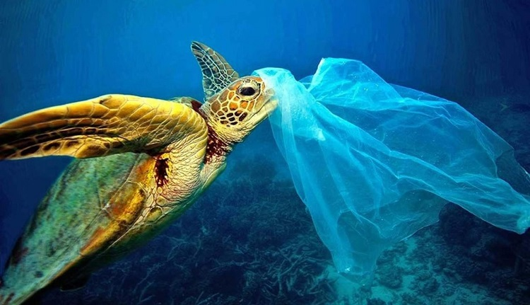
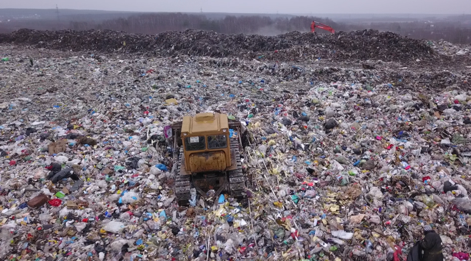
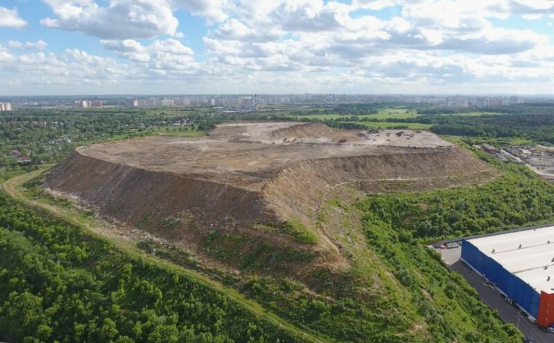
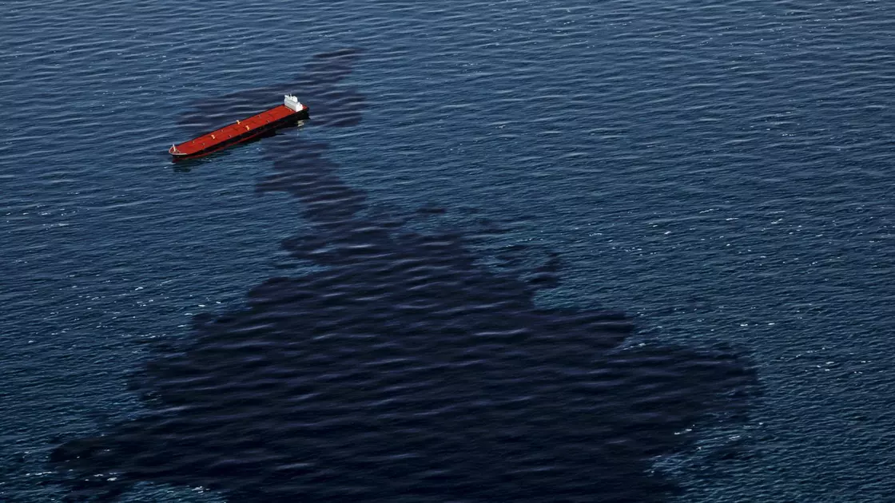

Доступный по цене, прочный и гибкий пластик окутал современную жизнь,
проявляясь во всем – от упаковки до одежды и косметических средств. Но он
же и выбрасывается в огромных масштабах: каждый год более 280 миллионов
тонн пластиковых товаров-однодневок становятся мусором. Масла в огонь ещё
подливает сам факт, что для разложения пластика обычно требуется от 500 до
1000 лет. Даже после этого он не полностью разлагается, а становится
микропластиком.
Больше всего пластика образуется в странах с высоким уровнем дохода, но
чаще всего там выстроены системы управления отходами, поэтому он либо
перерабатывается, либо захоранивается на специальных полигонах. При этом
страны с более низким уровнем дохода хоть и потребляют меньше пластика, но
часто у них отсутствует местная инфраструктура по работе с отходами.
Почти половина пластика тонет из-за своей низкой плавучести. Даже в
самой глубокой точке земли - Марианской впадине - уже обнаруживают
мусор, ртуть и отравленную токсинами рыбу. Вторая половина пластиковых
отходов, как показывают исследования, которая хорошо держится на воде,
чаще всего не уходит далеко в океан - около 80% плавающего пластика
будет выброшено на берег в течение месяца после попадания в океан.
Некоторый мусор может быть снова смыт в море, но эксперты приходят к
выводу, что на берегу остается большинство пластиковых плавучих
отходов. С одной стороны, это упрощает его сбор, с другой - это риск
для прибрежной среды и рыбной промышленности.Все это приводит к
увеличению смертности морских животных, ведь они принимают пластик за
пищу, что и приводит к их гибели. Это касается не только рыб, но и
птиц......

Россия, как и многие страны мира, производит миллионы тонн пластикового
мусора ежегодно, значительная часть которого попадает на свалки или в
окружающую среду. С переработкой достижений тоже нет. По разным данным,
перерабатывается только 5–15% пластика, остальное сжигается или
захоранивается. Реки (Волга, Обь, Енисей и др.) выносят пластик в океаны,
способствуя глобальной проблеме микропластика.

Сегодня почти весь мусор россиян оказывается на полигонах и свалках:
на захоронение отправляют более 90% отходов. Свалки уже сейчас
занимают площадь, сопоставимую с территорией Швейцарии. Уже через год
в 17 регионах на свалках закончится место, а через три — еще в 15.
Полигон «Кучино» появился в 1964 году (по другой информации — в 1971) на
месте отработанного глиняного карьера. Полигон принимал отходы из Москвы
и районов Подмосковья. Так свалка стала приносить проблемы местным
жителям, и даже после закрытия меньше мусора не стало. Отходы стали
распределять между другими полигонами Москвы.

Полигон ТБО «Кучино»
- Район: Городской округ Балашиха
- Период работы: 1964-2017
- Объём: 40 000 000 м³
- Площадь: 0,59 км²
- Годовой тоннаж: 100 000
Экологическое состояние Чёрного моря вызывает серьёзную тревогу из-за
комплекса проблем: загрязнение, эвтрофикация, сокращение
биоразнообразия и климатические изменения. Ежегодно в море попадают
десятки тысяч тонн пластика, особенно из впадающих рек (Дунай, Днепр,
Днестр). Также присутствуют сбросы азотных и фосфорных удобрений (с
сельхозполей через реки) в море, из-за которых размножаются ядовитые
водоросли (например, Noctiluca scintillans).В результате образуются
"мёртвые зоны" (бескислородные участки на глубине), где погибает всё
живое.
Ситуацию усугубила экологическая катастрофа. 15 декабря 2024 года во
время шторма в Керченском проливе из-за разлома корпусов двух
российских нефтяных танкеров класса «Волгонефть» — «Волгонефть-212» и
«Волгонефть-239» произошел разлив мазута.Утечка привела к серьёзным
последствиям. Уже 17 декабря в Анапе и ряде населённых пунктов
Темрюкского района Краснодарского края ввели режим чрезвычайной
ситуации, а 26 декабря его повысили до федерального уровня. К середине
января мазутом были загрязнены не менее 54 км береговой линии
Краснодарского края (от посёлка Веселовка Темрюкского района до
станицы Благовещенской близ Анапы) и 15 км побережья Крыма (Керчь,
Тобечик, Севастополь, Феодосия, Алушта и Судак, вход в Балаклавскую
бухту)
